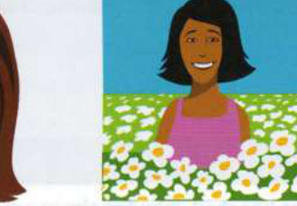
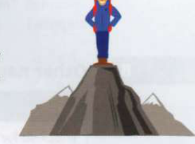

Bài tập
35.1
Hoàn thành mỗi thành ngữ từ phần A ở trang đối diện.
1
The company's new line of sportswear has been incredibly popular, and they've made a lot of money. They really ........................................................................... jackpot this time. (Dòng quần áo thể thao mới của công ty cực kỳ được ưa chuộng và họ đã kiếm được rất nhiều tiền. Lần này họ thực sự đã trúng đậm...)
2
The end-of-term party really went with ........................................................................... . Everyone enjoyed themselves. (Buổi tiệc cuối học kỳ thực sự đã diễn ra sôi nổi và thành công. Mọi người đều rất vui vẻ.)
3
That apple pie you made went down ........................................................................... with our dinner guests. (Chiếc bánh táo bạn làm đã được các khách mời ăn tối đón nhận nồng nhiệt.)
4
We were freezing, so she gave us some hot chocolate to drink - it really ........................................................................... spot. (Chúng tôi đang lạnh cóng, nên cô ấy đã cho chúng tôi uống sô-cô-la nóng - nó thực sự rất tuyệt vời/đúng thứ chúng tôi cần.)
5
Everyone was in a happy mood and entered ........................................................................... the fancy-dress ball. (Mọi người đều đang trong tâm trạng vui vẻ và đã hòa mình vào bầu không khí của buổi dạ hội hóa trang.)
6
His lecture hit exactly ........................................................................... . Everyone enjoyed it and said it was very informative too. (Bài giảng của ông ấy đã đánh trúng tâm lý người nghe. Mọi người đều thích thú và nói rằng nó cũng chứa đựng rất nhiều thông tin bổ ích.)
35.2
Những bức tranh này gợi cho bạn nghĩ đến những thành ngữ nào?
1
......................................................
2

......................................................
3
......................................................
4

......................................................
35.3
Thay thế phần gạch chân trong mỗi câu bằng một thành ngữ.
1
After winning the race, I was feeling extremely excited for the rest of the day. (Sau khi thắng cuộc đua, tôi đã cảm thấy cực kỳ phấn chấn trong suốt thời gian còn lại của ngày.)
2
The decision to cancel the rugby match was very good news to me. I hadn't been looking forward to it at all. (Quyết định hủy trận đấu bóng bầu dục là tin rất vui đối với tôi. Tôi đã hoàn toàn không trông đợi nó.)
3
Meeting the president was something I had always dreamt of, and now it was real. (Gặp mặt tổng thống là điều tôi đã luôn mơ ước và nay đã thành sự thật.)
4
Shona was looking very happy this morning. Something good must have happened. (Sáng nay trông Shona rất vui tươi/hạnh phúc. Chắc hẳn phải có chuyện tốt lành gì đó đã xảy ra.)
5
George is dreaming of becoming famous - he's joined a rock band and given up his job. (George đang mơ mộng làm ngôi sao nổi tiếng - cậu ấy đã tham gia một ban nhạc rock và bỏ việc.)
35.4
Viết lại mỗi câu bằng cách sử dụng từ trong ngoặc.
1
Sam Bagg's new album filled me with amazement and excitement. [BLEW] (Album mới của Sam Bagg làm tôi vô cùng kinh ngạc và phấn khích.)
2
My sister is such a happy and easy-going person. [LUCKY] (Chị gái tôi quả là một người vui vẻ và vô tư lự.)
3
Iris is incredibly happy today! [SPRING] (Hôm nay Iris vô cùng vui vẻ và ngập tràn sức sống!)
4
He's so very happy in his new job. [LARRY] (Anh ấy cực kỳ hạnh phúc với công việc mới của mình.)
5
This new series of adventure novels is just perfect for a teenage audience. [STRIKE] (Loạt tiểu thuyết phiêu lưu mới này thực sự rất phù hợp với độc giả tuổi thiếu niên.)
35.5
Sửa các lỗi sai trong những thành ngữ này.
1
The music festival went on a swing, and a lot of money was raised for charity. (Lễ hội âm nhạc đã diễn ra sôi nổi và thành công, quyên góp được rất nhiều tiền từ thiện.)
2
The song we wrote for the end-of-course party went as a treat for all the teachers. (Bài hát chúng tôi viết cho buổi tiệc cuối khóa đã được tất cả thầy cô đón nhận nồng nhiệt.)
3
My cousin's got a star on her eye ever since her music teacher told her she could be famous one day. (Em họ tôi luôn mơ mộng làm ngôi sao kể từ khi giáo viên dạy nhạc nói rằng một ngày nào đó em ấy có thể nổi tiếng.)
4
Edward is such a happy-lucky person; he never worries about anything. (Edward là một người rất vô tư lự; anh ấy không bao giờ lo lắng về điều gì.)
Đến lượt bạn
Tra từ điển tốt hoặc truy cập Cambridge Dictionaries Online và tìm ít nhất một thành ngữ nói về cảm xúc tích cực dựa trên mỗi từ sau: content, cheerful, moon.